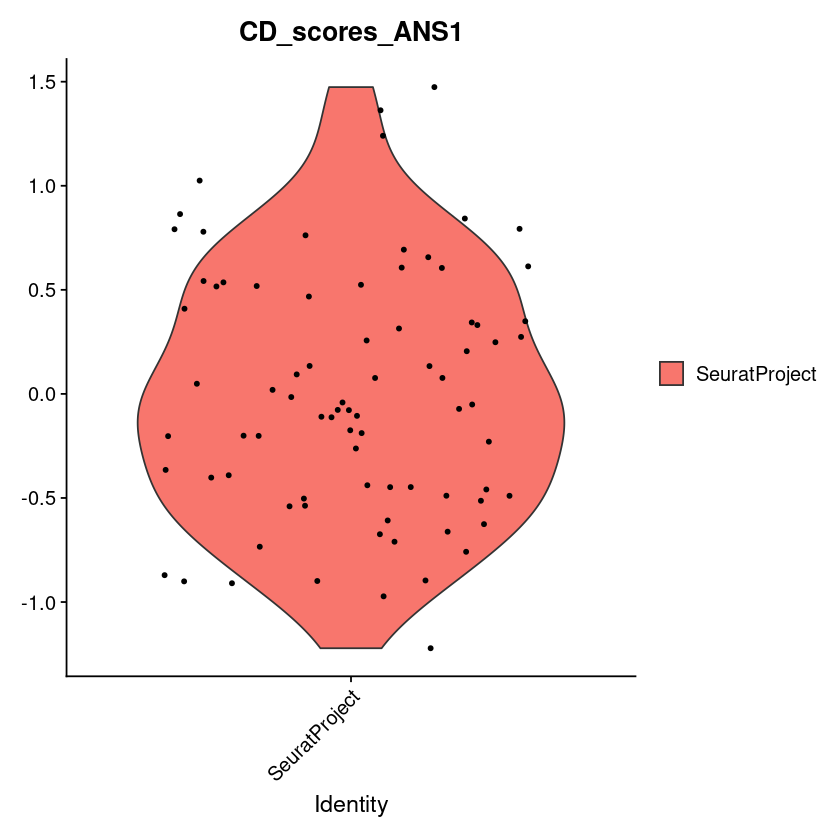

Tutorial: Scoring with ANS in R#
The following tutorial shows how to score a signature with ANS in R. The jupyter notebook is heavily based on the AddModuleScore usage example of the Seurat method description, see here.
Equally to the Seurat
[1]:
library("Seurat")
source('../../src_R/adjusted_neighborhood_scoring.R')
Loading required package: SeuratObject
Loading required package: sp
The legacy packages maptools, rgdal, and rgeos, underpinning the sp package,
which was just loaded, were retired in October 2023.
Please refer to R-spatial evolution reports for details, especially
https://r-spatial.org/r/2023/05/15/evolution4.html.
It may be desirable to make the sf package available;
package maintainers should consider adding sf to Suggests:.
Attaching package: ‘SeuratObject’
The following objects are masked from ‘package:base’:
intersect, saveRDS
Loading Seurat v5 beta version
To maintain compatibility with previous workflows, new Seurat objects will use the previous object structure by default
To use new Seurat v5 assays please run: options(Seurat.object.assay.version = 'v5')
Attaching package: ‘zoo’
The following objects are masked from ‘package:base’:
as.Date, as.Date.numeric
Load small sample dataset
[2]:
data("pbmc_small")
Define one signature and store it in list object
[3]:
cd_features <- list(c(
'CD79B',
'CD79A',
'CD19',
'CD180',
'CD200',
'CD3D',
'CD2',
'CD3E',
'CD7',
'CD8A',
'CD14',
'CD1C',
'CD68',
'CD9',
'CD247'
))
Score with ANS.
[4]:
pbmc_small <- AdjustedNeighborhoodScoring(
object = pbmc_small,
features = cd_features,
ctrl = 5, # by default ANS uses 100 control genes per signature gene
name = 'CD_scores_ANS'
)
Warning message:
“`GetAssayData()` was deprecated in SeuratObject 5.0.0.
ℹ Please use `LayerData()` instead.”
First entries of small dataset
[5]:
head(x = pbmc_small[])
| orig.ident | nCount_RNA | nFeature_RNA | RNA_snn_res.0.8 | letter.idents | groups | RNA_snn_res.1 | CD_scores_ANS1 | |
|---|---|---|---|---|---|---|---|---|
| <fct> | <dbl> | <int> | <fct> | <fct> | <chr> | <fct> | <dbl> | |
| ATGCCAGAACGACT | SeuratProject | 70 | 47 | 0 | A | g2 | 0 | 0.7791735 |
| CATGGCCTGTGCAT | SeuratProject | 85 | 52 | 0 | A | g1 | 0 | 0.7931169 |
| GAACCTGATGAACC | SeuratProject | 87 | 50 | 1 | B | g2 | 0 | 0.8425729 |
| TGACTGGATTCTCA | SeuratProject | 127 | 56 | 0 | A | g2 | 0 | 0.6067555 |
| AGTCAGACTGCACA | SeuratProject | 173 | 53 | 0 | A | g2 | 0 | 0.4678895 |
| TCTGATACACGTGT | SeuratProject | 70 | 48 | 0 | A | g1 | 0 | 1.4741454 |
| TGGTATCTAAACAG | SeuratProject | 64 | 36 | 0 | A | g1 | 0 | 0.5359506 |
| GCAGCTCTGTTTCT | SeuratProject | 72 | 45 | 0 | A | g1 | 0 | 0.5423551 |
| GATATAACACGCAT | SeuratProject | 52 | 36 | 0 | A | g1 | 0 | 1.2401691 |
| AATGTTGACAGTCA | SeuratProject | 100 | 41 | 0 | A | g1 | 0 | 0.2482804 |
[6]:
VlnPlot(object = pbmc_small, features = 'CD_scores_ANS1', group.by = 'orig.ident')
